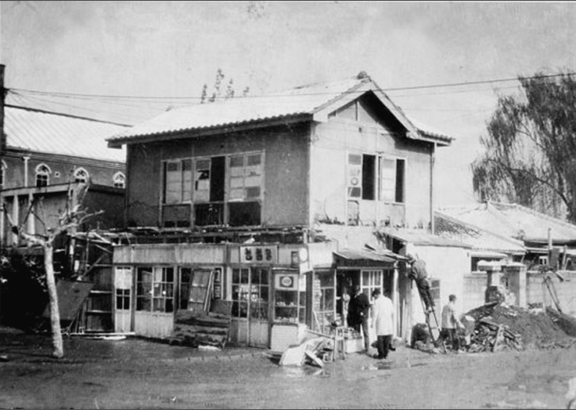
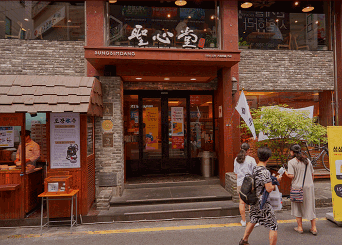

- 
-
- 시작은 밀가루 2포대 였다.
- 성심당의 초대 사장 임길순 사장님은 원래 함경도 출신이다.
-
가지고 있던 모든 것을 버리고 남으로 피난 오는
과정은 말 그대로 죽을 고생이었다. 이 때문에 임길순 사장님은
‘살아남는다면 평생 남을 위해 살겠다’는 다짐을 했다.
-
대전 대흥동성당의 오기 전 신부님에게 밀가루 2포대를 받았다.
1956년 예수의 성심(聖心)을 기리며 대전역 앞에서 간판을 걸고
찐빵을 팔기 시작했다.
-
모두가 배고팠던 그 시절, 그때부터도 성심당은 대전역 앞에서
굶는 이들과 찐빵을 나눠 먹었다.
-
- 그 정신은 이어진다.
-
성심당은 여전히 하루 생산한 빵의 3분의 1을 기부한다.
매월 금액으로 따지면 약 3~4천만 원에 상당하는 빵이 도움이
필요한 곳으로 꾸준히 기부되어 왔다.
-
성심당의 경영목표는 ‘가치 있는 기업’이 되는 것이다.
빵에 대한 성심당의 철학을 실현해 내는 것, 그리고 그 과정에서
고소한 빵내음처럼 사랑의 문화가 세상 밖으로 퍼져나가는
‘가치 있는 기업’이 되는 것이 성심당의 목표이다.
-
실제로 빵이 매진되어 남은 빵이없다고 해도
어려운 이웃들과
나눌 양을 따로 구워내어 기부하기도 하였다.
-
이는 단순히 허울 뿐인 경영목표가 아닌 실천해내는 행동력
그에 따른 신뢰도가 지금까지의 성심당을 만들 수 있었다.
-
